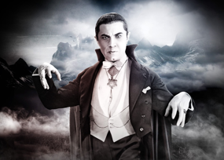

Drácula es uno de los personajes más icónicos de la literatura de terror, creado por el escritor irlandés Bram Stoker en su novela Drácula, publicada en 1897.
Es un vampiro inmortal que se alimenta de la sangre de los vivos para mantenerse joven y poderoso. Con su capacidad de transformarse en diversas formas, como murciélago o niebla, y su siniestra presencia, Drácula ha aterrorizado a generaciones de lectores y espectadores.
La figura de Drácula está inspirada en el príncipe Vlad III de Valaquia, también conocido como Vlad el Empalador, un gobernante del siglo XV conocido por su brutalidad.
Aunque Stoker nunca confirmó que Vlad fuera la base de su personaje, muchos creen que la fama del príncipe como un líder despiadado y sangriento influyó en la creación del vampiro. La novela también incorpora elementos del folclore europeo, especialmente las leyendas sobre vampiros que circulaban en esa época.
Hoy en día, Drácula sigue siendo una figura clave en la cultura popular. Su historia ha sido adaptada en numerosas películas, series de televisión, videojuegos y obras de teatro. Aunque la imagen del vampiro ha evolucionado, Drácula sigue siendo el referente principal cuando se habla de vampiros en la ficción. Además, su castillo ficticio en Transilvania, aunque no real, sigue atrayendo a turistas fascinados por la leyenda del vampiro más famoso de todos los tiempos.